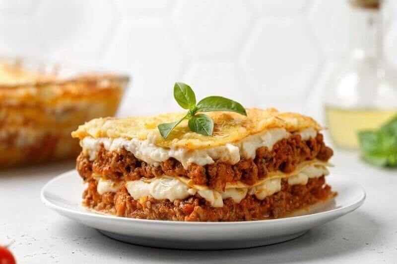

Lasanha

Ingredientes
- 2 colheres (sopa) de óleo
- 1 cebola média picada (150 g)
- 1 pacote de massa de lasanha seca direto ao forno (250 g)
Modo de preparo
- Em uma panela grande, coloque o óleo e leve ao fogo alto para aquecer. Junte a cebola e refogue por 2 minutos. Acrescente a carne, aos poucos, e frite por 10 minutos, ou até o líquido secar. Adicione o tomate e refogue por 3 minutos, ou até que comece a desmanchar.
- Cubra com papel-alumínio e leve ao forno médio (180 graus), preaquecido, por 20 minutos, ou até que a massa fique macia. Remova o papel-alumínio e volte ao forno por mais 5 minutos, ou até dourar o queijo.